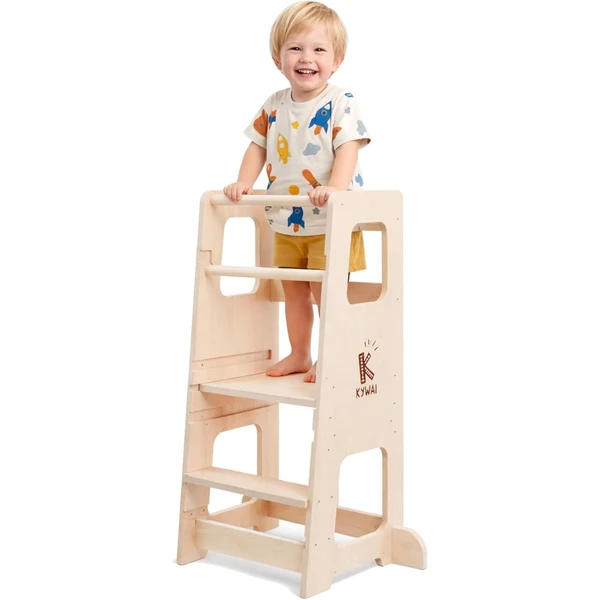
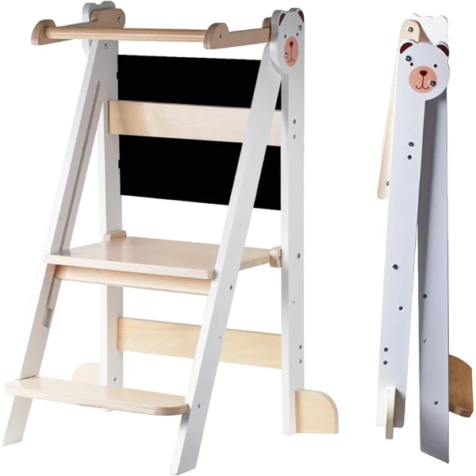
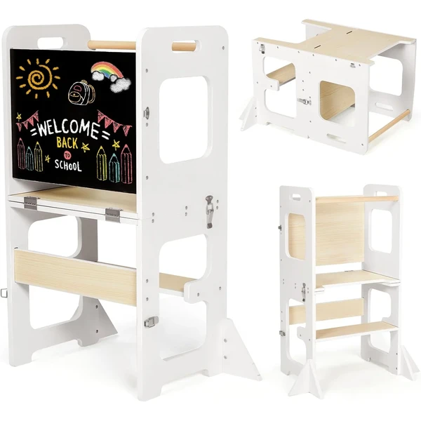
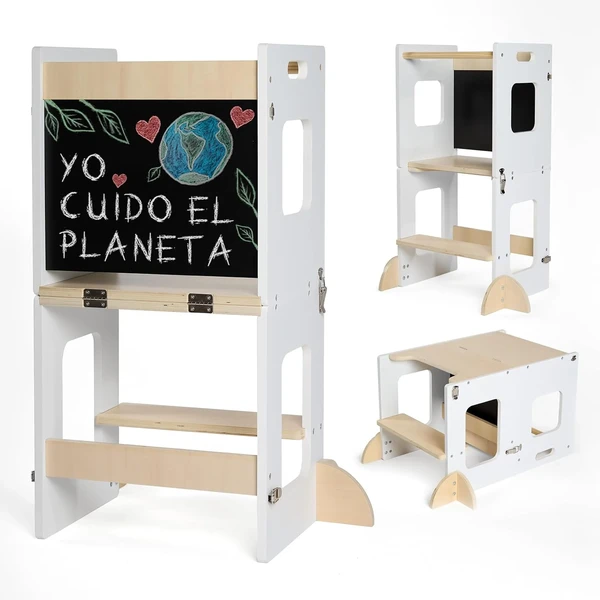
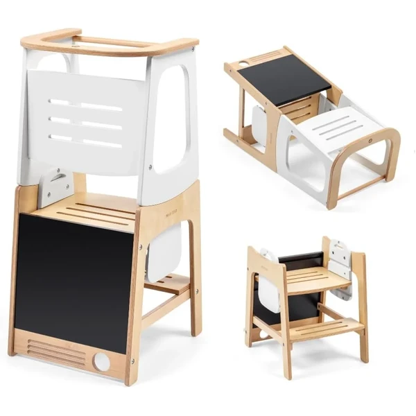
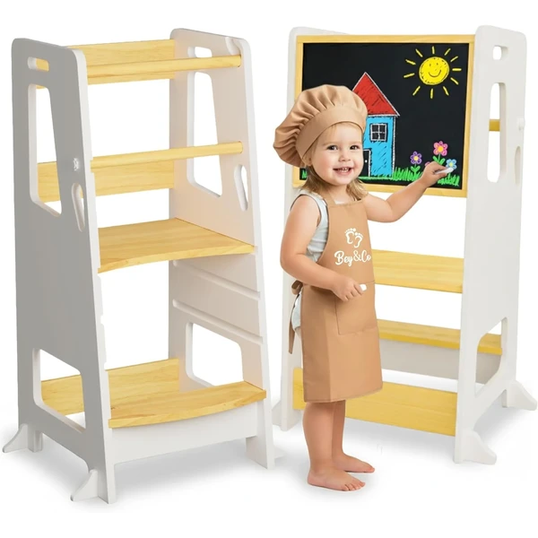
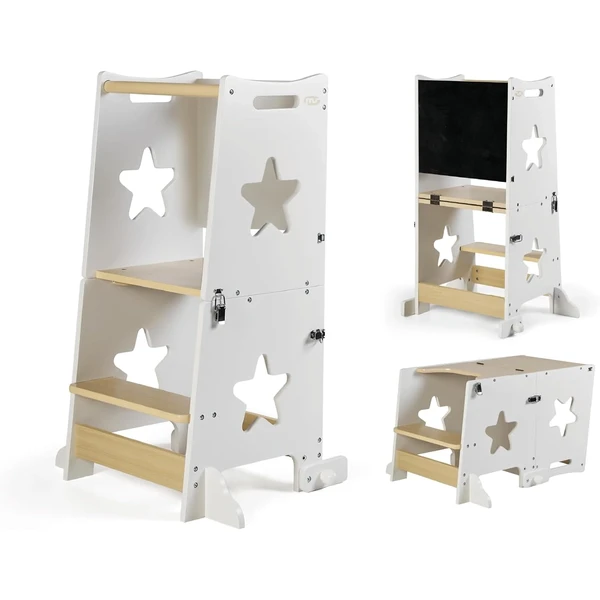

Torre de aprendizaje Premium ajustable
Torre de aprendizaje Montessori ajustable a tres alturas, con barras de seguridad desmontables y patas antivuelco a cada lado. Pensada para acompañar el crecimiento del niño desde el primer año.
⭐ ¿Por qué nos gusta?
- ✔ Ajustable a tres alturas distintas.
- ✔ Patas antivuelco a ambos lados.
- ✔ Barras de seguridad desmontables según la etapa.
💬 Lo que más destacan las familias
Las familias destacan la sensación de estabilidad y que las barras de seguridad se puedan quitar cuando el niño ya no las necesita.
Ver en Amazon

Torre de aprendizaje Xplora Buddy Baby
Torre de aprendizaje y ayuda en la cocina, con pizarra opcional para dibujar mientras se usa. Recomendada a partir de los 36 meses, con materiales lisos y fáciles de limpiar.
⭐ ¿Por qué nos gusta?
- ✔ Incluye pizarra opcional integrada.
- ✔ Materiales lisos, fáciles de limpiar.
- ✔ Montaje rápido y sencillo.
💬 Lo que más destacan las familias
Se valora que el niño pueda participar en tareas de cocina con seguridad, y que la pizarra sea un extra que se usa bastante.
Ver en Amazon

Torre de aprendizaje plegable Labebe 3 en 1
Torre de aprendizaje plegable 3 en 1 con pizarra incorporada y un diseño de bloques de color combinables. Barandilla de seguridad estable y pies antivuelco para mayor tranquilidad.
⭐ ¿Por qué nos gusta?
- ✔ Se pliega para guardar cuando no se usa.
- ✔ Pizarra incorporada para dibujar.
- ✔ Diseño de bloques de color combinables.
💬 Lo que más destacan las familias
Las familias destacan lo práctico que resulta poder plegarla y guardarla cuando no hace falta tenerla montada.
Ver en Amazon

Torre plegable 3 en 1 KYWAI
Torre de aprendizaje plegable que se transforma en mesa y silla en pocos segundos, con pizarra integrada y patas antivuelco a cada lado. Montaje rápido y diseño compacto.
⭐ ¿Por qué nos gusta?
- ✔ Se transforma en mesa y silla en segundos.
- ✔ Pizarra integrada para aprender jugando.
- ✔ Patas antivuelco a ambos lados.
💬 Lo que más destacan las familias
Se valora mucho la versatilidad de transformarla en mesa y silla, alargando su vida útil más allá de la torre.
Ver en Amazon

Torre de aprendizaje Toucan Maxi-Cosi
Torre de aprendizaje Montessori de Maxi-Cosi, convertible en mesa y silla, con tres posiciones de altura y pizarra integrada. Fabricada en madera 100% certificada FSC.
⭐ ¿Por qué nos gusta?
- ✔ Convertible en mesa y silla.
- ✔ Tres posiciones de altura regulables.
- ✔ Madera 100% certificada FSC.
💬 Lo que más destacan las familias
Las familias destacan la marca conocida y que la madera certificada transmita más confianza a la hora de comprar.
Ver en Amazon

Torre de observación BEY & CO
Torre de aprendizaje y observación de madera, ajustable a tres alturas distintas, pensada para que el niño alcance la encimera con seguridad desde los primeros años.
⭐ ¿Por qué nos gusta?
- ✔ Tres alturas ajustables según la edad.
- ✔ Estructura de madera resistente.
- ✔ Método Montessori reconocido a nivel mundial.
💬 Lo que más destacan las familias
Es una de las torres más comentadas por su estabilidad y por la facilidad para ajustar la altura según crece el niño.
Ver en Amazon

Torre convertible en escritorio Learn Up
Torre de aprendizaje Montessori que se convierte en escritorio, pensada para acompañar al niño desde la cocina hasta las primeras tareas de mesa. Recomendada a partir de los 36 meses.
⭐ ¿Por qué nos gusta?
- ✔ Se convierte en escritorio para otras actividades.
- ✔ Uso diario, más allá de la cocina.
- ✔ Diseño pensado según los principios Montessori.
💬 Lo que más destacan las familias
Se valora que sirva también como escritorio, dándole un uso más allá de las tareas de cocina.
Ver en Amazon